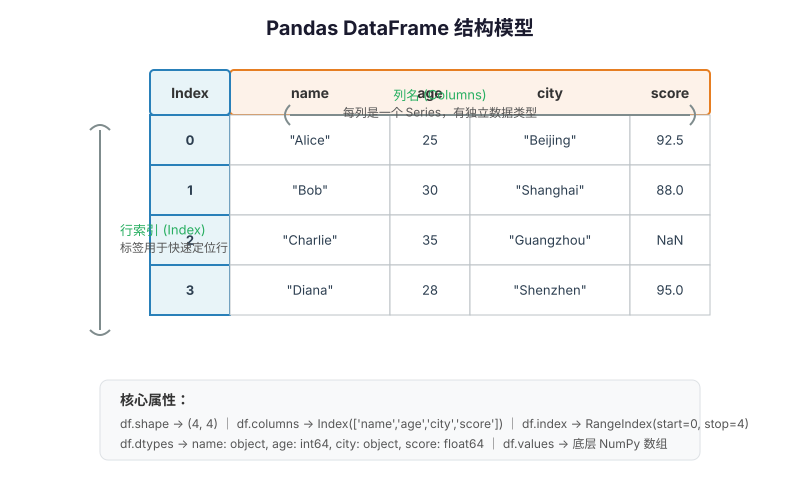
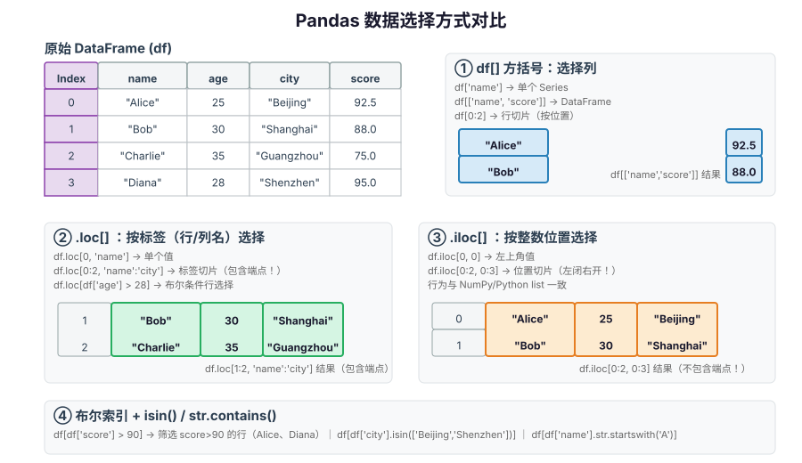
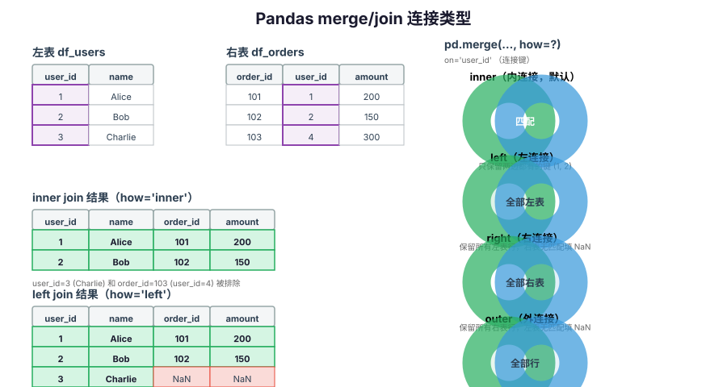
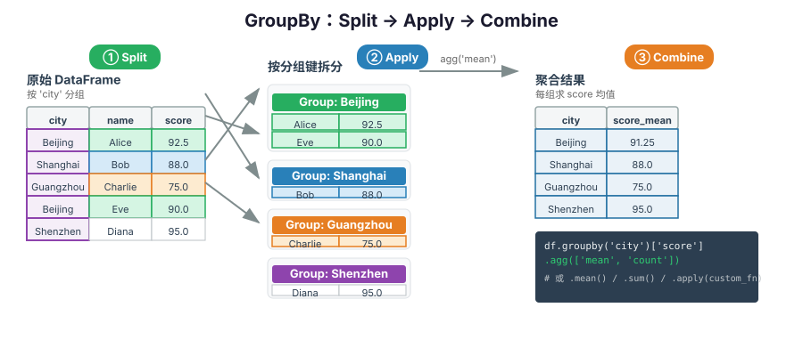

Pandas 使用指南：从 Series/DataFrame 到数据分析实践
Pandas 是 Python 生态中最核心的数据分析与处理库。它构建在 NumPy 之上，提供
Series（一维带标签数组）和DataFrame（二维带标签表格）两种核心数据结构，支持数据清洗、变换、聚合、合并、时间序列处理以及多种格式的文件 I/O。数据科学、机器学习、金融分析、业务报表等场景几乎离不开它。
一、Pandas 解决什么问题
用 Python 原生 list + dict 处理表格数据时，需要手动管理列名、类型、缺失值、对齐等问题；SQL 虽然强大但无法在 Python 进程内灵活做复杂变换与可视化。Pandas 把"带标签的表格"抽象为一等公民，让你用几行代码完成筛选、分组聚合、表连接、透视表、滚动窗口等操作。
import pandas as pd
df = pd.DataFrame({
"name": ["Alice", "Bob", "Charlie", "Diana"],
"age": [25, 30, 35, 28],
"city": ["Beijing", "Shanghai", "Guangzhou", "Shenzhen"],
"score": [92.5, 88.0, None, 95.0],
})
print(df.groupby("city")["score"].mean())
二、安装与基本约定
2.1 安装
建议在虚拟环境中固定依赖版本：
python -m venv .venv
source .venv/bin/activate # macOS/Linux
# .venv\Scripts\Activate.ps1 # Windows PowerShell
python -m pip install "pandas==2.2.3" "numpy>=2.0" "openpyxl>=3.1"
openpyxl 是读写 Excel .xlsx 文件的可选依赖，需要操作 Excel 时安装。
import pandas as pd
import numpy as np
print(pd.__version__)
社区惯例是 import pandas as pd。不要使用 from pandas import *。
2.2 核心数据结构：Series 与 DataFrame

- Series：一维带标签数组，由一组同类型（或
object）数据 + 一组索引（Index）组成，类似于带行名的 NumPy 一维数组。 - DataFrame：二维带标签表格，由多个 Series 按列拼接而成，既有行索引（Index）也有列名（Columns）。每列可以是不同的数据类型。
s = pd.Series([10, 20, 30, 40], index=["a", "b", "c", "d"], name="numbers")
print(s)
# a 10
# b 20
# c 30
# d 40
# Name: numbers, dtype: int64
df = pd.DataFrame({
"x": [1, 2, 3],
"y": [4.0, 5.5, 6.1],
}, index=["row1", "row2", "row3"])
| 结构 | 维度 | 索引 | 类比 |
|---|---|---|---|
| Series | 1 | 只有行索引 | 带标签的一列 |
| DataFrame | 2 | 行索引 + 列名 | Excel 工作表 / SQL 表 |
2.3 常用属性一览
df = pd.DataFrame({"a": [1, 2], "b": [3.0, 4.0]})
print(df.shape) # (2, 2)
print(df.columns) # Index(['a', 'b'], dtype='object')
print(df.index) # RangeIndex(start=0, stop=2, step=1)
print(df.dtypes) # a int64; b float64
print(df.values) # 底层 NumPy 数组（不推荐，推荐 .to_numpy()）
print(df.T) # 转置
print(df.info()) # 类型、非空值数量、内存占用摘要
print(df.describe()) # 数值列的统计摘要（count/mean/std/min/max/分位数）
三、创建数据
3.1 从 Python 对象创建
# 从 dict 创建：key 为列名，value 为等长序列
df = pd.DataFrame({
"name": ["Alice", "Bob", "Charlie"],
"age": [25, 30, 35],
"city": ["Beijing", "Shanghai", "Guangzhou"],
})
# 从列表的列表（二维数组）创建，需指定 columns
df2 = pd.DataFrame(
[[1, 4.0], [2, 5.5], [3, 6.1]],
columns=["id", "value"],
index=["r1", "r2", "r3"],
)
# 从列表的 dict 创建（每行是一条记录）
df3 = pd.DataFrame([
{"name": "Alice", "age": 25},
{"name": "Bob", "age": 30},
])
# 从 NumPy 数组创建
arr = np.arange(12).reshape(3, 4)
df4 = pd.DataFrame(arr, columns=["a", "b", "c", "d"])
3.2 常用初始化构造函数
| 函数 | 作用 |
|---|---|
pd.DataFrame(dict/list/ndarray) |
通用构造函数 |
pd.Series(data, index, name, dtype) |
创建 Series |
pd.read_csv(path) |
从 CSV 文件读取 |
pd.read_excel(path, sheet_name) |
从 Excel 文件读取 |
pd.read_json(path_or_buf) |
从 JSON 读取 |
pd.read_sql(query, con) |
从 SQL 查询读取 |
pd.date_range(start, end, periods, freq) |
生成日期范围索引 |
dates = pd.date_range("2026-01-01", periods=5, freq="D")
# DatetimeIndex(['2026-01-01', '2026-01-02', ..., '2026-01-05'])
四、数据查看与初步探查
df = pd.DataFrame({
"name": ["Alice", "Bob", "Charlie", "Diana", "Eve"],
"age": [25, 30, 35, 28, np.nan],
"city": ["Beijing", "Shanghai", "Guangzhou", "Shenzhen", "Beijing"],
"score": [92.5, 88.0, 75.0, 95.0, 90.0],
})
df.head(3) # 前 3 行，默认 5
df.tail(2) # 后 2 行
df.sample(2) # 随机抽 2 行
df.shape # (5, 4)
df.dtypes # 各列类型
df.info() # 总览：非空计数、类型、内存
df.describe() # 数值列统计摘要
df.describe(include="object") # 字符串/分类列的统计（unique/top/freq）
df["city"].value_counts() # 列值频次统计
df["city"].unique() # 去重后的列值数组
df["city"].nunique() # 不同值的个数
df.nlargest(2, "score") # 按 score 取最大的 2 行
df.nsmallest(2, "age") # 按 age 取最小的 2 行
五、索引与选择数据

Pandas 提供多套索引 API，必须明确区分，否则会遇到 SettingWithCopyWarning 或意外结果。
| 方式 | 语法 | 行/列选择依据 | 切片端点 |
|---|---|---|---|
[] 方括号 |
df[col] / df[[c1,c2]] |
选列（标量/列表）；切片选行 | 行切片为位置切片，左闭右开 |
.loc[] |
df.loc[row, col] |
按标签（索引名/列名） | 标签切片包含两端 |
.iloc[] |
df.iloc[row_pos, col_pos] |
按整数位置 | 位置切片左闭右开 |
.at[] / .iat[] |
df.at[label, col] |
快速取单个值 | 按标签/位置 |
| 布尔索引 | df[mask] / df.loc[mask] |
按条件筛选行 | — |
df = pd.DataFrame({
"name": ["Alice", "Bob", "Charlie", "Diana"],
"age": [25, 30, 35, 28],
"city": ["Beijing", "Shanghai", "Guangzhou", "Shenzhen"],
"score": [92.5, 88.0, 75.0, 95.0],
}, index=["r0", "r1", "r2", "r3"])
# ---- 选列 ----
df["name"] # Series
df[["name", "score"]] # DataFrame
df.name # 简写，仅当列名是合法标识符且不与方法重名时可用（不推荐用于生产）
# ---- .loc 按标签 ----
df.loc["r1", "name"] # "Bob"
df.loc["r0":"r2", "name":"city"] # 标签切片，包含 r2 和 city！
df.loc[["r0", "r3"], ["name", "score"]]
# ---- .iloc 按位置 ----
df.iloc[0, 0] # "Alice"
df.iloc[0:2, 0:3] # 位置切片，左闭右开（不包含第2行/第3列）
df.iloc[[0, 3], [0, 3]]
# ---- 布尔索引 ----
df[df["age"] > 28]
df.loc[df["city"].isin(["Beijing", "Shenzhen"])]
df.loc[df["name"].str.startswith("A")]
df.loc[(df["age"] > 25) & (df["score"] > 90)] # 多条件必须用 & | ~ 且加括号
5.1 SettingWithCopyWarning 的本质
链式索引（先选列再选行，或两次 []）可能在副本而非视图上赋值，修改不会落回原 DataFrame。
# 不推荐：可能触发 SettingWithCopyWarning
df[df["age"] > 28]["score"] = 0 # 可能无效
# 推荐：一次性用 .loc 定位并赋值
df.loc[df["age"] > 28, "score"] = 0
需要明确隔离修改时，显式调用 .copy()：
subset = df.loc[df["city"] == "Beijing"].copy()
subset["new_col"] = 1 # 安全，不影响 df
六、数据清洗
6.1 缺失值处理
Pandas 用 np.nan（或 pd.NA 在扩展类型中）表示缺失值。None 在数值列中也会被转换为 NaN。
df = pd.DataFrame({
"name": ["Alice", "Bob", "Charlie", "Diana"],
"age": [25, None, 35, 28],
"score": [92.5, 88.0, np.nan, 95.0],
})
df.isna() # 逐元素布尔，True 表示缺失
df.isnull() # isna 的别名
df.notna() # 反义
df["age"].isna() # Series 级别的缺失掩码
df.dropna() # 删除含缺失值的行
df.dropna(axis=1) # 删除含缺失值的列
df.dropna(subset=["age"]) # 只看 age 列的缺失
df.dropna(how="all") # 全行都为 NaN 才删
df.fillna(0) # 统一填充为 0
df.fillna({"age": 0, "score": df["score"].mean()}) # 按列指定填充值
df["age"] = df["age"].fillna(df["age"].median()) # 用中位数填充
df.ffill() # 前向填充（用上一个非空值填充）
df.bfill() # 后向填充（用下一个非空值填充）
df.interpolate(method="linear") # 线性插值填充
6.2 重复值处理
df.duplicated() # 每行是否是前面行的重复
df.duplicated(subset=["name"]) # 按指定列判断重复
df.drop_duplicates() # 删除整行重复（保留首次出现）
df.drop_duplicates(subset=["city"], keep="last") # 按 city 去重，保留最后出现
6.3 数据类型转换
df["age"] = df["age"].astype("Int64") # 可空整数类型（Pandas 扩展类型）
df["city"] = df["city"].astype("category") # 分类类型，节省内存
df["score"] = pd.to_numeric(df["score"], errors="coerce") # 转数值，失败变 NaN
df["date"] = pd.to_datetime(df["date_str"], errors="coerce") # 转日期时间
errors="coerce" 会把无法解析的值变为 NaN/NaT，避免整个转换失败。
6.4 替换与字符串处理
df["city"] = df["city"].replace({"Beijing": "北京", "Shanghai": "上海"})
df["city"] = df["city"].str.replace("i", "I", regex=False)
# .str 访问器：向量化字符串方法
df["name"].str.lower()
df["name"].str.upper()
df["name"].str.len()
df["name"].str.contains("li")
df["name"].str.startswith("A")
df["name"].str.strip()
df["name"].str.split(" ", expand=True) # expand=True 返回 DataFrame
七、列操作、赋值与变换
7.1 增加/删除列
# 新增列
df["double_score"] = df["score"] * 2
df["age_band"] = pd.cut(df["age"], bins=[0, 25, 35, 100], labels=["young", "mid", "senior"])
df = df.assign(
score_z = (df["score"] - df["score"].mean()) / df["score"].std(),
is_pass = df["score"] >= 60,
)
# 删除列
df = df.drop(columns=["double_score"])
df.drop(columns=["age_band"], inplace=True) # inplace=True 直接修改原对象（谨慎使用）
# 插入列到指定位置
df.insert(loc=1, column="id", value=range(1, len(df) + 1))
assign 返回新对象，不修改原数据，适合链式调用：
result = (
df
.assign(score_sqrt=np.sqrt(df["score"]))
.query("score_sqrt > 9")
.sort_values("score", ascending=False)
)
7.2 重命名
df = df.rename(columns={"name": "姓名", "age": "年龄"})
df = df.rename(index={"r0": "row_0"})
df.columns = ["A", "B", "C", "D"] # 整体替换列名
7.3 排序
df.sort_values(by="age", ascending=True)
df.sort_values(by=["city", "score"], ascending=[True, False])
df.sort_index()
df.sort_index(axis=1, ascending=False) # 按列名排序
7.4 映射与自定义变换
df["city_code"] = df["city"].map({"Beijing": 1, "Shanghai": 2, "Guangzhou": 3, "Shenzhen": 4})
df["age"] = df["age"].apply(lambda x: x + 1 if pd.notna(x) else x) # 逐元素
df[["age", "score"]] = df[["age", "score"]].apply(np.sqrt) # 对列逐元素应用 ufunc
# 行级处理（谨慎，性能较低）
df["info"] = df.apply(lambda row: f"{row['name']}({row['city']})", axis=1)
行级 apply(axis=1) 本质是 Python 循环，数据量大时优先使用向量化操作或 np.where、np.select、pd.cut。
df["level"] = np.select(
[df["score"] >= 90, df["score"] >= 75, df["score"] >= 60],
["A", "B", "C"],
default="D",
)
八、合并、连接与拼接

8.1 merge（数据库风格 join）
users = pd.DataFrame({"user_id": [1, 2, 3], "name": ["Alice", "Bob", "Charlie"]})
orders = pd.DataFrame({"order_id": [101, 102, 103], "user_id": [1, 2, 4], "amount": [200, 150, 300]})
pd.merge(users, orders, on="user_id", how="inner") # 默认 inner
pd.merge(users, orders, on="user_id", how="left")
pd.merge(users, orders, on="user_id", how="right")
pd.merge(users, orders, on="user_id", how="outer")
# 两边列名不同时用 left_on / right_on
pd.merge(users, orders, left_on="user_id", right_on="uid", how="inner")
# 按索引合并
pd.merge(users, orders, left_index=True, right_index=True)
# 处理重复列名后缀
pd.merge(df1, df2, on="key", suffixes=("_left", "_right"))
how 参数 |
含义 |
|---|---|
"inner" |
只保留两边键都匹配的行（默认） |
"left" |
保留左表全部行，右表无匹配填 NaN |
"right" |
保留右表全部行，左表无匹配填 NaN |
"outer" |
保留两边所有行，无匹配填 NaN |
"cross" |
笛卡尔积（慎用） |
8.2 join（按索引合并的快捷方式）
users.set_index("user_id").join(orders.set_index("user_id"), how="left")
8.3 concat（轴向拼接）
# 纵向拼接（行方向，类似 SQL UNION ALL）
pd.concat([df1, df2], axis=0, ignore_index=True)
# 横向拼接（列方向）
pd.concat([df1, df2], axis=1)
# 拼接时标明来源
pd.concat([df1, df2], keys=["source_a", "source_b"])
8.4 append（已废弃，用 concat 替代）
df.append() 在 Pandas 2.0 已移除，请使用 pd.concat([df, new_row], ignore_index=True)。
九、分组与聚合：groupby

groupby 的核心思想是"拆分-应用-合并"（Split-Apply-Combine）：先按一个或多个键拆成多个子组，对每个子组独立应用聚合/变换/过滤，最后合并结果。
df = pd.DataFrame({
"city": ["Beijing", "Shanghai", "Beijing", "Guangzhou", "Shenzhen", "Beijing"],
"name": ["Alice", "Bob", "Eve", "Charlie", "Diana", "Frank"],
"age": [25, 30, 28, 35, 28, 40],
"score": [92.5, 88.0, 90.0, 75.0, 95.0, 85.0],
})
# 单聚合
df.groupby("city")["score"].mean()
df.groupby("city")["score"].agg(["mean", "sum", "count", "max", "min", "std"])
# 多列聚合
df.groupby("city").agg(
avg_score=("score", "mean"),
total_score=("score", "sum"),
avg_age=("age", "mean"),
n=("name", "count"),
)
# 多键分组
df.groupby(["city", "age_band"])["score"].mean()
# 过滤：保留组成员满足条件的整个组
df.groupby("city").filter(lambda g: g["score"].mean() > 88)
# 变换：返回与原表等长的结果（组内标准化）
df["city_score_mean"] = df.groupby("city")["score"].transform("mean")
df["score_z"] = df.groupby("city")["score"].transform(
lambda s: (s - s.mean()) / s.std()
)
常用内置聚合函数：sum、mean、median、min、max、std、var、count（非 NaN 计数）、size（含 NaN 计数）、first、last、nunique。
十、透视表与交叉表
# 透视表
df.pivot_table(
values="score",
index="city",
columns="age_band",
aggfunc="mean",
fill_value=0,
margins=True, # 加合计行/列
)
# 交叉表：频次统计
pd.crosstab(df["city"], df["age_band"], margins=True)
pd.crosstab(df["city"], df["age_band"], values=df["score"], aggfunc="mean")
十一、时间序列处理
Pandas 对时间序列提供强大支持：
# 生成时间索引
dates = pd.date_range("2026-01-01", periods=10, freq="D")
ts = pd.Series(np.random.randn(10), index=dates)
# 字符串转时间
df["date"] = pd.to_datetime(df["date_str"], format="%Y-%m-%d", errors="coerce")
# 从 datetime 列提取属性
df["year"] = df["date"].dt.year
df["month"] = df["date"].dt.month
df["day"] = df["date"].dt.day
df["weekday"] = df["date"].dt.weekday # 0=周一
df["quarter"] = df["date"].dt.quarter
# 重采样（类似 groupby，但按时间桶聚合）
ts.resample("W").mean() # 按周求均值
ts.resample("ME").sum() # 按月求和（月末标签）
ts.resample("QE").last() # 按季度取最后值
# 滚动窗口
ts.rolling(window=3).mean() # 3 期移动平均
ts.rolling(window=3, min_periods=1).mean()
# 偏移与差
df["prev_value"] = df["value"].shift(1)
df["diff"] = df["value"].diff(1) # 一阶差分
df["pct_change"] = df["value"].pct_change() # 百分比变化
常用 freq 别名：
| 别名 | 含义 |
|---|---|
D |
日历日 |
B |
工作日 |
W |
周（周日为结束） |
ME / M |
月末 |
QE / Q |
季末 |
YE / A |
年末 |
h / H |
小时 |
min / T |
分钟 |
s / S |
秒 |
十二、文件读写
12.1 CSV
df = pd.read_csv(
"data.csv",
sep=",",
header=0, # 第 0 行为表头
index_col=None,
usecols=["a", "b"], # 只读指定列
dtype={"id": "Int64"},
parse_dates=["date"],
na_values=["N/A", "missing"],
encoding="utf-8",
chunksize=10_000, # 分块读取，返回迭代器
)
df.to_csv(
"out.csv",
index=False, # 不写行索引
encoding="utf-8-sig", # Windows 下 Excel 打开不乱码
na_rep="",
)
12.2 Excel
df = pd.read_excel(
"data.xlsx",
sheet_name="Sheet1", # 或 0，或 ["Sheet1", "Sheet2"]
header=0,
usecols="A:D", # 也可以用列字母
)
df.to_excel("out.xlsx", sheet_name="data", index=False)
# 写多个 sheet
with pd.ExcelWriter("out.xlsx") as writer:
df1.to_excel(writer, sheet_name="users", index=False)
df2.to_excel(writer, sheet_name="orders", index=False)
12.3 JSON
df = pd.read_json("data.json", orient="records")
df.to_json("out.json", orient="records", force_ascii=False, indent=2)
常用 orient："records"（列表的对象）、"columns"（列名→列值对象）、"split"（分离 index/columns/data）、"index"。
12.4 SQL
from sqlalchemy import create_engine
engine = create_engine("sqlite:///data.db")
df = pd.read_sql("SELECT * FROM users WHERE age > 20", con=engine)
df.to_sql("users_copy", con=engine, if_exists="replace", index=False)
if_exists 可选 "fail"（默认）、"replace"（删表重建）、"append"（追加）。
12.5 大文件分块读取
chunk_iter = pd.read_csv("huge.csv", chunksize=100_000)
total = 0
for chunk in chunk_iter:
total += chunk["amount"].sum()
print(total)
十三、贯穿案例：用户订单数据清洗与分析
下面通过一个完整示例串联前面的知识点：
import pandas as pd
import numpy as np
users = pd.DataFrame({
"user_id": [1, 2, 3, 4, 5],
"name": ["Alice", "Bob", "Charlie", "Diana", "Eve"],
"age": [25, 30, None, 28, 35],
"city": ["Beijing", "Shanghai", "Beijing", "Shenzhen", "Beijing"],
"reg_date": ["2025-03-01", "2025-03-15", "2025-04-01", "bad-date", "2025-05-01"],
})
orders = pd.DataFrame({
"order_id": range(101, 110),
"user_id": [1, 1, 2, 2, 3, 4, 4, 5, 2],
"amount": [200, 150, 300, 50, np.nan, 400, 250, 100, 90],
"status": ["paid", "paid", "paid", "refund", "paid", "paid", "paid", "paid", "paid"],
})
# 1. 类型转换与缺失值处理
users["reg_date"] = pd.to_datetime(users["reg_date"], errors="coerce")
users["age"] = users["age"].fillna(users["age"].median()).astype(int)
# 2. 过滤有效订单，填充金额缺失为 0，剔除退款
valid_orders = orders.dropna(subset=["amount"]).query("status == 'paid'").copy()
# 3. 聚合：每个用户总消费、订单数
user_stats = valid_orders.groupby("user_id").agg(
total_spend=("amount", "sum"),
order_count=("order_id", "count"),
avg_order=("amount", "mean"),
).reset_index()
# 4. 与用户信息左连接，无订单用户保留
report = users.merge(user_stats, on="user_id", how="left")
report[["total_spend", "order_count", "avg_order"]] = report[
["total_spend", "order_count", "avg_order"]
].fillna(0)
# 5. 分级
report["level"] = np.select(
[report["total_spend"] >= 500, report["total_spend"] >= 200],
["VIP", "Normal"],
default="New",
)
# 6. 城市维度分析
city_report = report.groupby("city").agg(
user_count=("user_id", "count"),
vip_count=("level", lambda s: (s == "VIP").sum()),
total_spend=("total_spend", "sum"),
).sort_values("total_spend", ascending=False)
print(report)
print(city_report)
report.to_excel("user_report.xlsx", index=False)
十四、性能与最佳实践
- 优先向量化：能用 Series/NumPy 运算就别用
apply(axis=1)或 Python 循环。 - 选好
dtype：字符串列优先考虑category（基数不太大时），可空整数用"Int64"，布尔用"boolean"扩展类型以支持pd.NA。 - 避免频繁 append：循环中不要反复
df = pd.concat([df, row])，先收集到list再一次性构造 DataFrame。 - 只读取需要的列：
read_csv(usecols=...)、指定dtype能显著降低内存。 - 链式索引不要赋值：统一用
.loc[mask, col] = value，避免SettingWithCopyWarning。 inplace=True不总是高效：很多情况下它仍然创建副本，而且不利于链式调用；推荐赋值给新变量。groupby后列选择：df.groupby("k")["v"].mean()比df.groupby("k").mean()["v"]更高效（先选列再聚合，少算无关列）。- 大文件分块：用
chunksize迭代处理，或考虑dask.dataframe、polars、pyarrow等工具。
14.1 内存优化示例
def reduce_mem_usage(df: pd.DataFrame) -> pd.DataFrame:
for col in df.columns:
col_type = df[col].dtype
if col_type != "object" and not pd.api.types.is_categorical_dtype(col_type):
c_min, c_max = df[col].min(), df[col].max()
if pd.api.types.is_integer_dtype(col_type):
if c_min >= 0:
if c_max < 2**8: df[col] = df[col].astype("uint8")
elif c_max < 2**16: df[col] = df[col].astype("uint16")
elif c_max < 2**32: df[col] = df[col].astype("uint32")
else:
if c_min > -2**7 and c_max < 2**7: df[col] = df[col].astype("int8")
elif c_min > -2**15 and c_max < 2**15: df[col] = df[col].astype("int16")
elif c_min > -2**31 and c_max < 2**31: df[col] = df[col].astype("int32")
elif pd.api.types.is_float_dtype(col_type):
df[col] = df[col].astype("float32")
return df
十五、常见陷阱
| 问题 | 原因 | 建议 |
|---|---|---|
SettingWithCopyWarning |
链式索引返回副本，赋值可能丢失 | 用 .loc[row, col] = x 或先 .copy() |
| 切片端点搞错 | .loc 标签切片包含两端；.iloc 位置切片左闭右开 |
写完用 head()/切片打印验证 |
| 缺失值比较永远为 False | np.nan != np.nan |
用 isna()/notna() 判断 |
count() 与 size() 差异 |
count 不计 NaN；size 计 NaN |
按需求选用 |
多条件 and/or 报错 |
Python and/or 无法作用于 Series |
用 & \| ~，每个条件加括号 |
apply(axis=1) 超慢 |
行级 Python 循环 | 改写为向量化或 np.select |
字符串列默认 object 类型 |
内存高、操作慢 | 低基数字符串转为 "category" |
read_csv 数字被识别为字符串 |
存在千分位、货币符号或脏值 | 用 converters、pd.to_numeric(errors="coerce") |
merge 后行数暴涨 |
连接键不唯一导致笛卡尔积 | merge 前检查两边键的唯一性（duplicated） |
| 时间序列时区混乱 | 无时区 vs 有时区混合 | 统一用 tz_localize/tz_convert |
inplace=True 不生效 |
某些操作返回新对象，inplace 可能无效或被未来版本移除 |
优先用赋值式：df = df.xxx() |
十六、附录：Pandas 函数/属性汇总表
下表先列出全文涉及的核心函数、方法与属性，后面第 17 节给出每个条目的详细用法、参数、返回值与注意事项。
16.1 数据创建与 I/O
| 名称 | 类型 | 作用简述 |
|---|---|---|
pd.Series |
构造函数 | 创建一维带标签数组 |
pd.DataFrame |
构造函数 | 创建二维带标签表格 |
pd.date_range |
构造函数 | 生成固定频率的 DatetimeIndex |
pd.read_csv |
I/O | 读取 CSV/文本分隔文件 |
pd.read_excel |
I/O | 读取 Excel 文件 |
pd.read_json |
I/O | 读取 JSON 数据 |
pd.read_sql |
I/O | 从 SQL 查询/表读取 |
DataFrame.to_csv |
I/O | 导出为 CSV |
DataFrame.to_excel |
I/O | 导出为 Excel |
DataFrame.to_json |
I/O | 导出为 JSON |
DataFrame.to_sql |
I/O | 写入 SQL 数据库 |
pd.ExcelWriter |
上下文管理器 | 多 Sheet 写入 Excel |
16.2 属性与整体信息
| 名称 | 类型 | 作用简述 |
|---|---|---|
DataFrame.shape |
属性 | (行数, 列数) 元组 |
DataFrame.columns |
属性 | 列名 Index |
DataFrame.index |
属性 | 行索引 Index |
DataFrame.dtypes |
属性 | 各列数据类型 |
DataFrame.values |
属性 | 底层 NumPy 数组（不推荐） |
DataFrame.T |
属性 | 转置 |
DataFrame.info() |
方法 | 打印结构、非空计数、内存 |
DataFrame.describe() |
方法 | 数值列/分类列统计摘要 |
16.3 数据查看与探查
| 名称 | 类型 | 作用简述 |
|---|---|---|
DataFrame.head(n) |
方法 | 前 n 行 |
DataFrame.tail(n) |
方法 | 后 n 行 |
DataFrame.sample(n) |
方法 | 随机抽 n 行 |
Series.value_counts() |
方法 | 列值频次统计 |
Series.unique() |
方法 | 列去重值数组 |
Series.nunique() |
方法 | 去重值个数 |
DataFrame.nlargest(n, col) |
方法 | 按列取最大的 n 行 |
DataFrame.nsmallest(n, col) |
方法 | 按列取最小的 n 行 |
16.4 索引与选择
| 名称 | 类型 | 作用简述 |
|---|---|---|
df[col] / df[[cols]] |
索引器 | 选单列/多列 |
df.loc[row, col] |
索引器 | 按标签选择 |
df.iloc[r, c] |
索引器 | 按整数位置选择 |
df.at[lbl, col] / df.iat[r, c] |
索引器 | 快速取单个值 |
df.query(expr) |
方法 | 用字符串表达式筛选行 |
Series.isin(values) |
方法 | 元素是否在给定集合中 |
Series.str |
访问器 | 向量化字符串方法 |
16.5 缺失值、重复值与类型
| 名称 | 类型 | 作用简述 |
|---|---|---|
isna() / isnull() |
方法 | 判断缺失 |
notna() / notnull() |
方法 | 判断非缺失 |
dropna() |
方法 | 删除含缺失的行/列 |
fillna(x) |
方法 | 填充缺失值 |
ffill() / bfill() |
方法 | 前向/后向填充 |
interpolate() |
方法 | 插值填充 |
duplicated() |
方法 | 检测重复行 |
drop_duplicates() |
方法 | 删除重复行 |
astype(dtype) |
方法 | 类型转换 |
pd.to_numeric() |
函数 | 转数值类型 |
pd.to_datetime() |
函数 | 转日期时间类型 |
Series.replace() |
方法 | 值替换 |
16.6 列操作与变换
| 名称 | 类型 | 作用简述 |
|---|---|---|
df[new_col] = ... |
赋值 | 新增/覆盖列 |
DataFrame.assign(**kwargs) |
方法 | 链式新增列，返回新对象 |
DataFrame.drop(columns=) |
方法 | 删除列 |
DataFrame.insert(loc, column, value) |
方法 | 在指定位置插入列 |
DataFrame.rename() |
方法 | 重命名行/列 |
DataFrame.sort_values() |
方法 | 按值排序 |
DataFrame.sort_index() |
方法 | 按索引排序 |
pd.cut() |
函数 | 连续值分箱（按区间边界） |
pd.qcut() |
函数 | 按分位数分箱 |
Series.map() |
方法 | 映射/逐元素函数 |
DataFrame.apply() / Series.apply() |
方法 | 应用自定义函数（逐列/逐行/逐元素） |
np.where() / np.select() |
函数 | 向量化条件赋值 |
16.7 合并与拼接
| 名称 | 类型 | 作用简述 |
|---|---|---|
pd.merge() |
函数 | 数据库风格 join |
DataFrame.merge() |
方法 | merge 的方法形式 |
DataFrame.join() |
方法 | 按索引 join 的快捷方式 |
pd.concat() |
函数 | 轴向拼接（纵向/横向） |
16.8 分组、聚合、透视
| 名称 | 类型 | 作用简述 |
|---|---|---|
DataFrame.groupby() |
方法 | 按键分组，返回 GroupBy 对象 |
GroupBy.agg() / GroupBy.aggregate() |
方法 | 聚合（支持多函数/命名聚合） |
GroupBy.transform() |
方法 | 组内变换，返回等长结果 |
GroupBy.filter() |
方法 | 按组条件过滤整个组 |
GroupBy.size() |
方法 | 组大小（含 NaN） |
GroupBy.count() |
方法 | 组非 NaN 计数 |
DataFrame.pivot_table() |
方法 | 透视表 |
pd.crosstab() |
函数 | 交叉频次表 |
16.9 时间序列
| 名称 | 类型 | 作用简述 |
|---|---|---|
Series.dt |
访问器 | 日期时间属性访问（year/month/...） |
Series.shift(n) |
方法 | 按周期平移 |
Series.diff(n) |
方法 | n 阶差分 |
Series.pct_change(n) |
方法 | 百分比变化 |
Series.rolling(w) |
方法 | 滚动窗口 |
Series.resample(freq) |
方法 | 时间重采样 |
十七、附录：Pandas 函数/属性详细用法
17.1 数据创建
pd.Series(data=None, index=None, dtype=None, name=None, copy=False)
作用：创建一维带标签数组，是 DataFrame 的列单位。
核心参数：
data：类数组（list、ndarray、dict、标量）index：索引标签数组，长度与 data 一致；缺省时为RangeIndex(0, n)dtype：显式指定类型，如"int64"、"float64"、"string"、"category"name：Series 名称，在作为 DataFrame 列时自动成为列名
返回：Series。
pd.Series([1, 2, 3]) # 默认 RangeIndex
pd.Series([1, 2, 3], index=["a", "b", "c"]) # 自定义索引
pd.Series({"x": 1, "y": 2}) # dict 键成为索引
pd.Series(5, index=["a", "b", "c"]) # 标量广播
注意：从 dict 创建时若显式传 index，将按 index 顺序取值，缺失的键填 NaN。
pd.DataFrame(data=None, index=None, columns=None, dtype=None, copy=None)
作用：创建二维带标签表格，是 Pandas 最核心的对象。
核心参数：
data：ndarray、dict（列名→列值）、list of dict（每行一条记录）、另一个 DataFrameindex：行索引columns：列名顺序/筛选dtype：统一指定类型（一般由数据推断）
pd.DataFrame({"a": [1, 2], "b": [3.0, 4.0]})
pd.DataFrame([[1, 2], [3, 4]], columns=["x", "y"])
pd.DataFrame(np.arange(6).reshape(2, 3), columns=["a", "b", "c"])
注意：从 list of dict 创建时，缺失键自动填 NaN；dict 值长度必须一致（标量会广播）。
pd.date_range(start=None, end=None, periods=None, freq=None, tz=None, ...)
作用：生成等间距的 DatetimeIndex。
核心参数：
start/end：起止时间periods：生成点数（与end二选一或结合使用）freq：频率字符串，如"D"、"h"、"ME"、"W-MON"tz：时区，如"Asia/Shanghai"
pd.date_range("2026-01-01", periods=5, freq="D")
pd.date_range("2026-01-01", "2026-01-31", freq="W")
pd.date_range("2026-01-01", periods=3, freq="ME", tz="Asia/Shanghai")
17.2 文件 I/O
pd.read_csv(filepath_or_buffer, sep=',', delimiter=None, header='infer', index_col=None, usecols=None, dtype=None, parse_dates=None, na_values=None, encoding=None, chunksize=None, ...)
作用：读取分隔符文本文件为 DataFrame，是最常用的数据入口。
核心参数：
sep：分隔符，默认,；正则如r"\s+"支持多空白header：作为列名的行号，默认0；无表头传None并配合names=index_col：作为行索引的列号/列名/列表usecols：只读指定列（列名列表、列号列表或函数）dtype：dict指定列类型，如{"id": "Int64"}parse_dates：要解析为日期的列名/列号列表na_values：额外识别为 NaN 的字符串集合encoding：文本编码，常用"utf-8"、"utf-8-sig"（带 BOM）、"gbk"chunksize：分块大小，传此参数返回迭代器
返回：DataFrame；若指定 chunksize 返回 TextFileReader 迭代器。
pd.read_csv("data.csv", usecols=["id", "name"], dtype={"id": "Int64"})
for chunk in pd.read_csv("huge.csv", chunksize=100_000):
process(chunk)
注意：日期解析优先用 parse_dates 而不是读完后再 pd.to_datetime；但多列组合日期、自定义格式更适合读完后用 pd.to_datetime(df[["y","m","d"]]) 或指定 format。
pd.read_excel(io, sheet_name=0, header=0, usecols=None, dtype=None, ...)
作用：读取 Excel 文件（.xlsx/.xls）。需要 openpyxl（xlsx）或 xlrd（旧 xls）。
核心参数：
sheet_name：0默认第一个；字符串为 sheet 名；列表读多个 sheet 返回dict；None读全部usecols：列字母范围（如"A:D"）或列名列表dtype、header等同read_csv
pd.read_excel("data.xlsx", sheet_name="Sheet1", usecols="A:C")
sheets = pd.read_excel("data.xlsx", sheet_name=None) # dict of DataFrames
pd.read_sql(sql, con, index_col=None, ...) / pd.read_sql_table / pd.read_sql_query
作用：从 SQL 数据库读取。
read_sql自动判断是表名还是 SQL 语句；- 需要 SQLAlchemy
connectable（Engine/Connection）或 SQLite DB API 连接。
from sqlalchemy import create_engine
engine = create_engine("sqlite:///data.db")
df = pd.read_sql("SELECT * FROM users WHERE age > 20", engine)
DataFrame.to_csv(path_or_buf=None, sep=',', na_rep='', index=True, encoding=None, columns=None, ...)
作用：导出为 CSV。
核心参数：
na_rep：缺失值表示，默认空字符串index：是否写行索引，通常Falseencoding：Windows Excel 打开建议"utf-8-sig"columns：指定输出列顺序
df.to_csv("out.csv", index=False, encoding="utf-8-sig")
DataFrame.to_excel(excel_writer, sheet_name='Sheet1', index=True, ...)
作用：导出为 Excel。多 sheet 请配合 pd.ExcelWriter。
with pd.ExcelWriter("out.xlsx") as writer:
df1.to_excel(writer, sheet_name="a", index=False)
df2.to_excel(writer, sheet_name="b", index=False)
DataFrame.to_sql(name, con, if_exists='fail', index=True, index_label=None, chunksize=None, ...)
作用：写入 SQL 表。
核心参数：
if_exists："fail"（默认，表存在报错）、"replace"（删表重建）、"append"（追加）index：是否写索引为列
df.to_sql("users_copy", engine, if_exists="append", index=False)
注意："replace" 会 DROP TABLE 再重建，可能丢失约束/索引，生产环境慎用。
pd.ExcelWriter(path, engine=None, mode='w', ...)
作用：上下文管理器，用于向同一个 Excel 文件写入多个 sheet。
17.3 属性与整体信息
DataFrame.shape / DataFrame.ndim / DataFrame.size
shape：(行数, 列数)元组ndim：维度数，DataFrame 恒为 2size：元素总数 = 行数 × 列数
DataFrame.columns / DataFrame.index
columns：列标签Index对象，可整体赋值替换index：行标签Index对象
df.columns = ["A", "B", "C"]
df.index = pd.date_range("2026-01-01", periods=len(df))
DataFrame.dtypes
作用：返回每列数据类型的 Series。注意 Pandas 扩展类型（Int64、boolean、string、category、datetime64[ns, tz]）。
DataFrame.values
作用：返回底层 NumPy 数组。不推荐——若有扩展类型会产生 object 数组。推荐 DataFrame.to_numpy(dtype=None, copy=False)，更清晰可控。
DataFrame.T
作用：转置，行变列、列变行，返回视图或副本视情况。非数值列转置后类型可能变为 object。
DataFrame.info(verbose=None, buf=None, max_cols=None, memory_usage=None, show_counts=None)
作用：打印 DataFrame 摘要：索引类型、列名、非空计数、dtype、内存占用。是排查数据问题的首选命令。
df.info(memory_usage="deep") # 更精确计算 object 列内存
DataFrame.describe(percentiles=None, include=None, exclude=None)
作用：生成统计摘要。默认只描述数值列；include="all" 或 include="object"/"category" 可输出列的 unique/top/freq。
df.describe(percentiles=[0.1, 0.5, 0.9])
df.describe(include=["object", "category"])
17.4 数据查看
DataFrame.head(n=5) / DataFrame.tail(n=5)
返回前/后 n 行，默认 5。
DataFrame.sample(n=None, frac=None, replace=False, weights=None, random_state=None, axis=None)
作用：随机抽样。
n：抽多少行frac：抽比例（如0.1为 10%）replace：是否有放回random_state：随机种子，便于复现
df.sample(frac=0.1, random_state=42)
Series.value_counts(normalize=False, sort=True, ascending=False, bins=None, dropna=True)
作用：统计列值频次。
normalize=True返回比例而非次数dropna=False包含 NaN 的计数bins对数值列按区间分组计数
df["city"].value_counts(normalize=True)
df["score"].value_counts(bins=5)
Series.unique() / Series.nunique(dropna=True)
unique()：返回去重值的 NumPy 数组（顺序为首次出现顺序）nunique()：返回不同值的个数；dropna=False时把 NaN 也计数
DataFrame.nlargest(n, columns, keep='first') / DataFrame.nsmallest(n, columns, keep='first')
作用：按指定列取最大/最小的 n 行，比 sort_values().head(n) 性能更好。keep 决定相同值取前/后。
df.nlargest(5, "score")
df.nsmallest(3, ["age", "score"])
17.5 索引与选择
df.loc[row_selector, col_selector]
作用：按标签选择，是最推荐的索引器。row_selector/col_selector 可以是：
- 单个标签（如
"r1"、"name"） - 标签列表（
["r1", "r3"]、["name", "score"]） - 标签切片（包含两端）
- 布尔数组/Series（同长度）
callable(df)返回上述任意一种
df.loc["r1", "name"]
df.loc["r0":"r2", "name":"score"] # 包含 r2 和 score
df.loc[df["age"] > 28, ["name", "score"]]
df.loc[:, "a":"c"] = 0 # 批量赋值
df.iloc[row_pos, col_pos]
作用：按整数位置选择，与 NumPy 索引行为一致，切片左闭右开。
df.iloc[0, 0]
df.iloc[0:2, 0:3] # 不包含第 2 行和第 3 列
df.iloc[[0, 3], [0, -1]]
df.iloc[:, -1] # 最后一列
df.at[label, col] / df.iat[r, c]
作用：快速访问单个标量值，性能优于 loc/iloc 的单值访问。at 按标签，iat 按位置。
df.at["r1", "name"]
df.iat[0, 0] = "NewName" # 可赋值
df[col] 方括号索引器
作用：
- 传字符串：选单列，返回 Series
- 传列表：选多列，返回 DataFrame
- 传布尔 Series：筛选行
- 传切片：按位置/标签切片行（不推荐，语义模糊）
df["name"] # Series
df[["name", "score"]] # DataFrame
df[df["age"] > 28] # 行筛选
注意：df[0:2] 对 RangeIndex 按位置切；若索引是字符串标签则按标签切，容易混淆，推荐优先用 .loc/.iloc。
DataFrame.query(expr, inplace=False, **kwargs)
作用：用字符串表达式筛选行，适合长链式写法和动态列名。可用 @var 引用 Python 变量。
threshold = 90
df.query("age > 25 and score > @threshold")
df.query("city in ['Beijing', 'Shenzhen']")
注意：列名含空格或特殊字符时用反引号包裹：`col name`。
Series.isin(values)
作用：逐元素判断值是否在 values（list、set、Series、dict 等）中，返回布尔 Series。
df.loc[df["city"].isin(["Beijing", "Shenzhen"])]
注意：用 set 传入可提高大集合的查找性能。
Series.str（StringMethods 访问器）
作用：向量化字符串方法集合。Series 的 dtype 为 object 或 string 时可用。常用方法：
| 方法 | 作用 |
|---|---|
.lower() / .upper() |
大小写转换 |
.strip() / .lstrip() / .rstrip() |
去空白 |
.contains(pat, case=True, regex=True, na=None) |
是否包含模式 |
.startswith(s) / .endswith(s) |
开头/结尾匹配 |
.replace(pat, repl, regex=True) |
替换 |
.split(pat, n=-1, expand=False) |
分割，expand=True 返回 DataFrame |
.extract(pat, expand=True) |
正则提取分组为 DataFrame |
.len() |
长度 |
.slice(start, stop) |
按位置切片 |
.cat(sep=None, na_rep=None) |
字符串拼接 |
df["name"].str.contains("li", case=False, na=False)
df["code"].str.extract(r"(\d{3})-(\d{4})")
注意：默认 regex=True；固定字符串替换请传 regex=False 避免正则特殊字符误解析。
17.6 缺失值处理
isna() / isnull() / notna() / notnull()
作用：逐元素判断是否为缺失值。isna 与 isnull 互为别名；notna/notnull 是它们的反义。
df.isna()
df["age"].isna().sum() # 缺失数量
df[df["age"].notna()]
注意：Pandas 中 np.nan、None（在数值列中）、pd.NaT（时间缺失）、pd.NA（扩展类型缺失）都被视为缺失；np.nan != np.nan，因此不要用 == np.nan 判断。
DataFrame.dropna(axis=0, how='any', thresh=None, subset=None, inplace=False)
作用：删除含缺失值的行或列。
核心参数：
axis：0删行（默认），1删列how："any"只要有一个缺失就删（默认）；"all"全行/列全缺失才删thresh：要求非缺失值至少有多少个（保留阈值），覆盖howsubset：只在指定列判断缺失
df.dropna(subset=["age", "score"], thresh=2)
df.dropna(axis=1, how="all")
DataFrame.fillna(value=None, method=None, axis=None, inplace=False, limit=None, downcast=None)
作用：填充缺失值。
核心参数：
value：标量、dict/Series（按列指定填充值）、DataFramemethod：已弃用，建议用ffill()/bfill()limit：连续填充的最大个数downcast：尝试向下转型以节省内存
df.fillna(0)
df.fillna({"age": 0, "score": df["score"].mean()})
DataFrame.ffill(axis=0, limit=None, inplace=False) / bfill()
作用：前向（forward fill）/后向（backward fill）填充缺失值，用最近的非缺失值填充。
df["value"] = df["value"].ffill()
DataFrame.interpolate(method='linear', axis=0, limit=None, inplace=False, ...)
作用：插值填充。method="linear" 线性插值；还支持 "time"（时间加权）、"nearest"、"spline"、"polynomial" 等。
17.7 重复值与类型转换
DataFrame.duplicated(subset=None, keep='first')
作用：返回布尔 Series，标记是否是重复行。
subset：按哪些列判断重复（默认全部列）keep："first"第一次出现标记为 False（默认）；"last"最后一次标记为 False；False所有重复都标记 True
DataFrame.drop_duplicates(subset=None, keep='first', inplace=False, ignore_index=False)
作用：删除重复行。ignore_index=True 会重置索引为 RangeIndex。
df.drop_duplicates(subset=["city"], keep="last", ignore_index=True)
Series/DataFrame.astype(dtype, copy=True, errors='raise')
作用：类型转换。
dtype：目标类型，如"float32"、"Int64"、"string"、"category"errors："raise"（默认）报错；"ignore"忽略；注意没有"coerce"，coerce请用pd.to_numeric/pd.to_datetime
df["age"] = df["age"].astype("Int64")
df["city"] = df["city"].astype("category")
pd.to_numeric(arg, errors='raise', downcast=None)
作用：将参数转换为数值类型。
errors："raise"、"ignore"、"coerce"（失败变 NaN）downcast："integer"/"signed"/"unsigned"/"float"尝试缩小类型
df["amt"] = pd.to_numeric(df["amt"], errors="coerce")
pd.to_datetime(arg, errors='raise', format=None, utc=False, ...)
作用：转换为 datetime64[ns]。
errors：同上format：显式格式字符串（如"%Y-%m-%d"）可大幅加速解析utc=True：转换为 UTC 时区时间
df["date"] = pd.to_datetime(df["date_str"], format="%Y/%m/%d", errors="coerce")
注意：默认 format=None 会推断格式，慢且可能误判；数据量大或格式明确时一定要指定 format。
Series.replace(to_replace=None, value=None, inplace=False, limit=None, regex=False)
作用：替换值。支持：
- 标量到标量
- dict：
{old: new}或{col: {old: new}} - list：多个 old 映射到同一个 value
df["city"] = df["city"].replace({"Beijing": "BJ", "Shanghai": "SH"})
df["s"] = df["s"].replace(r"\s+", " ", regex=True)
17.8 列操作与变换
df[new_col] = value 赋值
作用：新增或覆盖列。value 可以是标量（广播）、Series/list/ndarray（等长）。
df["double"] = df["score"] * 2
df["flag"] = True
注意：赋值时 Pandas 按索引对齐——若赋值的 Series 索引不同，会按 df 的索引对齐，不匹配位置填 NaN。
DataFrame.assign(**kwargs)
作用：返回新 DataFrame，新增/覆盖指定列，不修改原对象，适合链式调用。kwargs 的值可以是标量、Series、或接受 df 作为参数的 callable。
df2 = df.assign(
score2=df["score"] * 2,
score_mean=lambda d: d["score"].mean(),
)
DataFrame.drop(labels=None, axis=0, index=None, columns=None, level=None, inplace=False, errors='raise')
作用：删除行或列。推荐用 columns=/index= 关键字避免 axis 混淆。
df = df.drop(columns=["tmp"])
df = df.drop(index=[0, 3])
DataFrame.insert(loc, column, value, allow_duplicates=False)
作用：在指定位置插入列（原地修改）。
df.insert(0, "id", range(1, len(df) + 1))
DataFrame.rename(mapper=None, index=None, columns=None, axis=None, inplace=False, errors='ignore')
作用：重命名行/列标签。支持 dict 映射或函数。
df = df.rename(columns=str.upper)
df = df.rename(columns={"name": "姓名"})
DataFrame.sort_values(by, axis=0, ascending=True, inplace=False, kind='quicksort', na_position='last', ignore_index=False, key=None)
作用：按值排序。
核心参数：
by：字符串或列名列表ascending：布尔或布尔列表（对应每列）na_position："last"（默认）NaN 放最后；"first"放最前ignore_index：True 时重置索引key：对每个排序键应用的向量化函数（类似 Pythonsorted的 key）
df.sort_values(["city", "score"], ascending=[True, False], na_position="first", ignore_index=True)
df.sort_values(by="name", key=lambda s: s.str.len())
DataFrame.sort_index(axis=0, ascending=True, inplace=False, na_position='last', ...)
作用：按索引排序。对时间索引、层级索引尤其有用。
pd.cut(x, bins, right=True, labels=None, retbins=False, precision=3, include_lowest=False, duplicates='raise', ordered=True)
作用：将连续值离散化为区间（"bin"），返回 Categorical 或 Series。
核心参数：
bins：整数（等宽分箱个数）或区间边界列表right：区间是否右闭，默认 Truelabels：自定义箱标签include_lowest：第一个区间是否包含左端点
pd.cut(df["age"], bins=[0, 25, 35, 100], labels=["young", "mid", "senior"])
pd.cut(df["score"], bins=3) # 等宽 3 箱
pd.qcut(x, q, labels=None, retbins=False, precision=3, duplicates='raise')
作用：按样本分位数分箱，保证每箱样本数大致相同。q 为分位数个数或分位点列表。
pd.qcut(df["score"], q=4, labels=["D", "C", "B", "A"]) # 四分位
Series.map(arg, na_action=None)
作用：根据映射关系（dict、Series、函数）替换 Series 中的每个值。
核心参数：
arg：dict/Series/functionna_action=None默认传播 NaN；传"ignore"时函数不会作用于 NaN
df["city_code"] = df["city"].map({"Beijing": 1, "Shanghai": 2})
df["name_len"] = df["name"].map(len)
注意：dict 映射中找不到的键会变为 NaN，而不是保持原值；需保持原值可用 replace 或 map + fillna。
DataFrame.apply(func, axis=0, raw=False, result_type=None, args=(), **kwargs) / Series.apply(func, convert_dtype=True, args=(), **kwargs)
作用：
- DataFrame：
axis=0（默认）对每列应用函数；axis=1对每行应用函数（性能敏感） - Series：对每个元素应用函数
df[["age", "score"]].apply(np.mean) # 每列均值
df["name"].apply(lambda x: x.upper()) # 逐元素
df.apply(lambda row: row["a"] + row["b"], axis=1)
⚠️ 注意：axis=1 是 Python 层逐行循环，大数据量（>10 万行）优先向量化，否则性能会差数十倍。
np.where(condition, x, y) / np.select(condlist, choicelist, default=0)
作用：向量化条件赋值。np.where 相当于三元表达式；np.select 多分支。
df["pass"] = np.where(df["score"] >= 60, "yes", "no")
df["grade"] = np.select(
[df["score"] >= 90, df["score"] >= 75, df["score"] >= 60],
["A", "B", "C"],
default="D",
)
17.9 合并与拼接
pd.merge(left, right, how='inner', on=None, left_on=None, right_on=None, left_index=False, right_index=False, sort=False, suffixes=('_x', '_y'), indicator=False, validate=None)
作用：数据库风格表连接。
核心参数：
how："inner"、"left"、"right"、"outer"、"cross"on：连接列名（两边相同）；不同时用left_on/right_onleft_index/right_index：按索引连接suffixes：重名列的后缀元组，默认("_x", "_y")indicator：True 时添加_merge列标记来源（left_only/right_only/both）validate："1:1"、"1:m"、"m:1"、"m:m"检查唯一性，不满足报错（推荐用于防止笛卡尔积爆炸）
pd.merge(users, orders, on="user_id", how="left", validate="1:m")
pd.merge(a, b, left_on="id", right_on="uid", how="inner", suffixes=("_a", "_b"))
最佳实践：生产代码尽量指定 validate，能第一时间发现键不唯一导致行数暴涨的问题。
DataFrame.join(other, on=None, how='left', lsuffix='', rsuffix='', sort=False, validate=None)
作用：按索引连接的便捷方法。other 可以是 DataFrame 或 DataFrame 列表。
users.set_index("user_id").join(orders.set_index("user_id"), how="left", rsuffix="_o")
pd.concat(objs, axis=0, join='outer', ignore_index=False, keys=None, levels=None, names=None, verify_integrity=False, sort=False, copy=True)
作用：沿指定轴拼接多个 DataFrame/Series。
核心参数：
objs：DataFrame/Series 的 list 或 dictaxis：0纵向拼接行（默认）；1横向拼接列join："outer"（默认，列并集）、"inner"（列交集）ignore_index：True 时重置索引为RangeIndexkeys：给每个片段打标签，形成层级索引verify_integrity：True 时检查新索引是否唯一，重复则报错
pd.concat([df1, df2], axis=0, ignore_index=True) # 纵向
pd.concat([df1, df2], axis=1) # 横向
pd.concat({"a": df1, "b": df2}, names=["source"])
注意：纵向拼接时列对齐按标签进行，列名稍有不同（空格/大小写）会产生多余列和 NaN；横向拼接按行索引对齐。
17.10 分组与聚合
DataFrame.groupby(by=None, axis=0, level=None, as_index=True, sort=True, group_keys=True, observed=False, dropna=True)
作用：按一个或多个键拆分，返回 DataFrameGroupBy/SeriesGroupBy 对象。
核心参数：
by：列名、列名列表、映射、函数、Series、数组（长度等 df 行数）as_index：默认 True，分组键成为结果索引；False 时分组键作为普通列sort：默认 True 按组键排序；False 保持首次出现顺序，性能略高observed：对于分类分组键，True 只显示观测到的类别；False 显示所有类别（默认）dropna：默认 True，分组键为 NA 的组会被丢弃；False 时 NA 作为一个组
df.groupby("city")
df.groupby(["city", "age_band"], as_index=False)["score"].mean()
df.groupby(pd.cut(df["score"], bins=3)) # 用 bin 作为分组键
GroupBy.agg(func=None, *args, **kwargs) / GroupBy.aggregate()
作用：聚合，返回每组一个值。支持以下写法：
- 单个函数字符串：
.agg("mean") - 函数列表：
.agg(["mean", "sum"]) - dict（按列指定）：
.agg({"score": "mean", "age": "max"}) - 命名聚合：
.agg(out_name=(col, func))（推荐，Pandas 0.25+）
df.groupby("city")["score"].agg(["mean", "sum", "count"])
df.groupby("city").agg(
avg_score=("score", "mean"),
n=("name", "count"),
)
可用内置聚合字符串："sum"、"mean"、"median"、"min"、"max"、"std"、"var"、"count"、"size"、"first"、"last"、"nunique"。
注意：count 统计非 NaN 个数；size 统计组大小（含 NaN）。
GroupBy.transform(func, *args, **kwargs)
作用：对每个组应用函数，返回与原 DataFrame/Series 等长的结果（索引与原对象对齐），常用于组内标准化、组内填充。
df["city_mean"] = df.groupby("city")["score"].transform("mean")
df["score_z"] = df.groupby("city")["score"].transform(
lambda s: (s - s.mean()) / s.std()
)
df["score_filled"] = df.groupby("city")["score"].transform(
lambda s: s.fillna(s.mean())
)
func 可以是函数字符串（如 "mean"、"rank"）或可调用对象。
GroupBy.filter(func, dropna=True, *args, **kwargs)
作用：按组级条件过滤整个组，保留满足条件的组的所有行。func(group_df) -> bool。
df.groupby("city").filter(lambda g: g["score"].mean() > 88)
GroupBy.size() / GroupBy.count()
size()：每组行数（包含 NaN 的行），返回 Seriescount()：每组每列非 NaN 个数，返回 DataFrame
DataFrame.pivot_table(values=None, index=None, columns=None, aggfunc='mean', fill_value=None, margins=False, margins_name='All', dropna=True, observed=False)
作用：创建透视表。
核心参数：
values：要聚合的列index：行分组键columns：列分组键aggfunc：聚合函数，可传 list/dict 实现多聚合fill_value：填充缺失单元格margins：是否加合计行/列
df.pivot_table("score", index="city", columns="age_band", aggfunc="mean", fill_value=0, margins=True)
pd.crosstab(index, columns, values=None, rownames=None, colnames=None, aggfunc=None, margins=False, margins_name='All', dropna=True, normalize=False)
作用：计算两（多）因子的交叉频次表。当提供 values 和 aggfunc 时等价于按频次聚合的透视表。
pd.crosstab(df["city"], df["age_band"], margins=True)
pd.crosstab(df["city"], df["age_band"], values=df["score"], aggfunc="mean")
17.11 时间序列
Series.dt（DatetimeProperties / TimedeltaProperties 访问器）
作用：对 datetime 类型 Series 访问时间属性：
| 属性/方法 | 含义 |
|---|---|
.year/.month/.day |
年/月/日 |
.hour/.minute/.second |
时/分/秒 |
.date/.time |
日期/时间部分 |
.dayofweek/.weekday |
周几（0=周一） |
.day_name()/.month_name() |
星期/月份名称 |
.quarter |
季度 |
.isocalendar() |
ISO 年/周/星期 |
.days_in_month |
当月天数 |
.tz_localize(tz) |
设时区（naive → tz-aware） |
.tz_convert(tz) |
转换时区 |
.to_period(freq) |
转为 Period |
df["date"].dt.year
df["date"].dt.tz_localize("UTC").dt.tz_convert("Asia/Shanghai")
Series.shift(periods=1, freq=None, axis=0, fill_value=None)
作用：将数据沿轴平移 periods 个位置，常用于计算滞后值/领先值。freq 用于时间索引时可直接移动时间。
df["prev"] = df["value"].shift(1)
df["next"] = df["value"].shift(-1)
Series.diff(periods=1)
作用：计算当前值与前第 periods 个值的差（一阶差分）。常用于去趋势。
df["delta"] = df["value"].diff()
Series.pct_change(periods=1, fill_method='pad', limit=None, freq=None)
作用：百分比变化：(x - x.shift(n)) / x.shift(n)。
df["ret"] = df["price"].pct_change()
Series.rolling(window, min_periods=None, center=False, win_type=None, on=None, axis=0, closed=None, step=None)
作用：创建滚动窗口对象，可调用聚合方法（mean、sum、std、apply 等）。
核心参数：
window：窗口大小（整数）或 offset（时间窗口如"7D"）min_periods：窗口内至少需要的非 NaN 个数center：True 时窗口中心对齐标签on：使用某列而非索引作为时间
df["ma7"] = df["price"].rolling(7, min_periods=1).mean()
df["vol30"] = df["ret"].rolling(30).std()
Series.resample(rule, axis=0, closed=None, label=None, convention='start', kind=None, on=None, level=None, origin='start_day', ...)
作用：时间重采样（降采样/升采样）。rule 是频率字符串。调用聚合方法（mean、sum、ohlc、agg 等）得到结果。
ts.resample("D").sum() # 按天求和
ts.resample("W-MON").mean() # 按周（周一切点）求均值
ts.resample("ME").last() # 月末最后值
ts.resample("h").ffill() # 升采样到小时并前向填充
十八、中英文术语对照表
| 英文 | 中文 | 说明 |
|---|---|---|
| Series | 序列 | 一维带标签数组 |
| DataFrame | 数据框 | 二维带标签表格 |
| Index | 索引 | 行/列标签对象 |
| label | 标签 | 索引中的元素（行名/列名） |
| position | 位置 | 整数下标（0-based） |
| missing value / NaN | 缺失值 | np.nan/pd.NA/NaT |
| categorical | 分类（类型） | 有限离散取值类型 |
| group by | 分组 | 按键拆分 |
| aggregate | 聚合 | 组内多个值归约为一个 |
| transform | 变换 | 组内变换，返回等长结果 |
| filter (groupby) | 组过滤 | 按组级条件保留/丢弃整组 |
| join / merge | 连接 / 合并 | 表之间按键关联 |
| pivot table | 透视表 | 行×列二维聚合 |
| crosstab | 交叉表 | 列联表/频次表 |
| resample | 重采样 | 时间维度的桶聚合 |
| rolling window | 滚动窗口 | 固定长度滑窗聚合 |
| forward fill / ffill | 前向填充 | 用前值填 NaN |
| backward fill / bfill | 后向填充 | 用后值填 NaN |
| chained indexing | 链式索引 | 连续用 [][] 可能产生副本 |
| view / copy | 视图 / 副本 | 是否共享内存 |
| dtype | 数据类型 | NumPy/Pandas 类型 |
| downcast | 向下转型 | 缩小类型位宽以省内存 |
| time zone / tz | 时区 | datetime64[ns, tz] |
| method chaining | 方法链 | .xxx().yyy().zzz() 连续调用 |
十九、进一步学习路径
- 熟练掌握
shape/dtypes/index/columns、loc/iloc、布尔索引、isna/fillna/dropna等基础。 - 练习"读入 → 清洗 → 变换 → 聚合 → 导出"的完整工作流。
- 深入
groupby（agg/transform/filter/apply的差异）、merge/join/concat与pivot_table。 - 掌握时间序列：
pd.to_datetime、dt访问器、resample、rolling、shift/diff/pct_change。 - 学习性能优化：类型转换（
category、Int64、string）、分块读写、避免apply(axis=1)。 - 处理更大数据时了解
pyarrowdtype（Pandas 2.0+ 的dtype_backend="pyarrow"）、polars、dask.dataframe、duckdb。